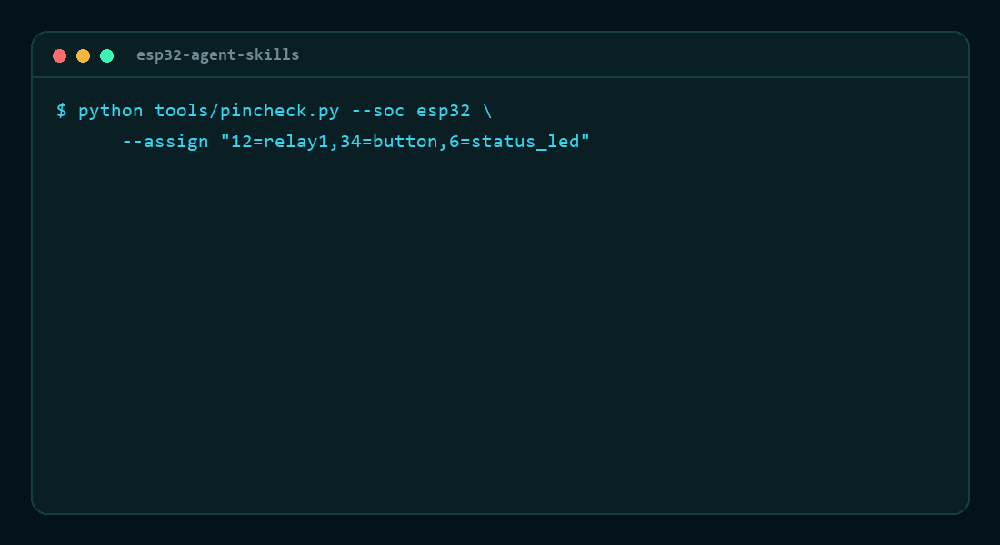

The board never boots again
GPIO6–11 are the SPI flash. Driving one is not a warning — it is a dead module until you reflash it over serial.
An agent writes pinMode(6, OUTPUT) and the build is green.
GPIO6 is wired to the SPI flash — the module stops booting.
Fourteen skills and four checkers catch that before the flash.
--- name: esp32-pin-safety description: Use when choosing or debugging ESP32 GPIO assignments in firmware. --- ## Check before you assign a pin - GPIO6-11 are the SPI flash. Driving one bricks the module. - GPIO34-39 are input-only. There is no output driver to enable. - GPIO12 high at reset selects 1.8 V flash: it boots once, then not. - ADC2 is unusable while Wi-Fi is on. # then: python tools/pincheck.py --soc esp32
Same command, two runs: the first exits 1 on a pin wired to the flash, the second exits 0 after the pin is moved. The text is the real output of those two runs, replayed line by line; the terminal frame around it is drawn, not a screen recording.

python tools/pincheck.py --soc esp32 --assign "12=relay1,34=button,6=status_led"
→ 1 error, exit 1. Swap 6 for 25 → exit 0.
Every failure below passes the compiler. None of them throws an error you can read. They show up as a board that will not boot, a battery that dies in three days, or a device that resets at 2am.
GPIO6–11 are the SPI flash. Driving one is not a warning — it is a dead module until you reflash it over serial.
GPIO12 high at reset selects 1.8 V flash. The board boots on your desk and fails in the enclosure.
A 12 ms wake every second looks cheap until you multiply by 60 mA. Nobody does that arithmetic by hand.
Each skill is a directory with a short SKILL.md, a license, and a
reference/ folder holding the long tables — the layout the official
Anthropic skill repository uses, so an agent loads only what it needs.
Each one exits non-zero on a real problem, so they drop straight into CI or a pre-flash hook. No dependencies, no virtualenv, no network.
Reads a pin map or an --assign list, checks it against the constraints of the chosen SoC.
64 KB app alignment, equal OTA slots, overlap, overflow — the four things that break an OTA.
Turns a duty cycle into days, then names the dominant term so you know which number to attack.
Pulls the reason, the core and the frames out of a Guru Meditation dump, in the order the CPU printed them.
$ python tools/power_budget.py --battery 3000 \ --wakes-per-hour 12 --wake-ms 2000 duty cycle 0.67% average current 0.677 mA battery life 184.7 days (4433.9 hours) where the charge goes idle 0.467 mA 69.0% tx 0.200 mA 29.6% sleep 0.010 mA 1.5% dominant term: idle (69.0%), fix that one first
$ python tools/partition_check.py \ --file examples/partitions-broken.csv --flash 4MB --ota ERROR app0 is an app partition at 68KB, app partitions must be aligned to 0x10000 ERROR app0 (68KB-1604KB) overlaps app1 ERROR spiffs ends at 4608KB, past the end of 4MB ERROR the ota app slots do not have the same size
The pin database was checked against a real module by flashing a sketch that asks
the chip what it is. The boot log and the reproduction steps are in
docs/hardware.md.
2 cores · 240 MHz · 4 MB flash · ESP-IDF v5.5.5 · 331,072 bytes free heap at boot
That output is the check itself: chip tells you which profile in
data/esp32-pins.json applies, flash is the value to pass to
partition_check.py, and the free heap is the budget a TLS connection
has to fit inside.
=== board facts === chip : ESP32-D0WD-V3 rev 301, 2 core(s) cpu : 240 MHz flash : 4 MB (4194304 bytes) sdk : v5.5.5 free heap : 331072 bytes === end ===
The skills are plain Markdown. The checkers are single files that run on the Python standard library, so there is nothing to install and nothing to break.
# as an agent skill
git clone https://github.com/Esmail-sarhadi/esp32-agent-skills
cp -r esp32-agent-skills/skills/esp32-pin-safety \
~/.claude/skills/
# run the checkers anywhere cd esp32-agent-skills python tools/pincheck.py --soc esp32 --file examples/pinmap.txt python -m unittest discover -s tests # 32 pass